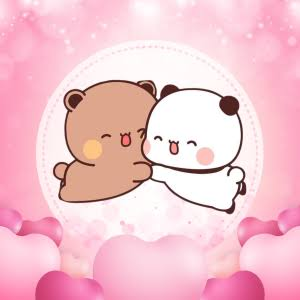
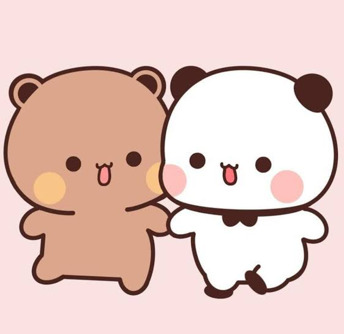
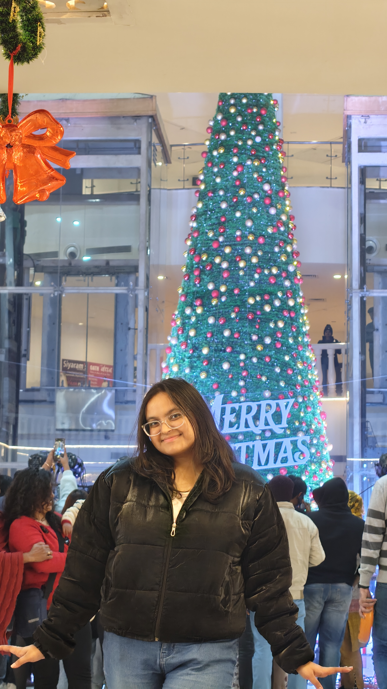
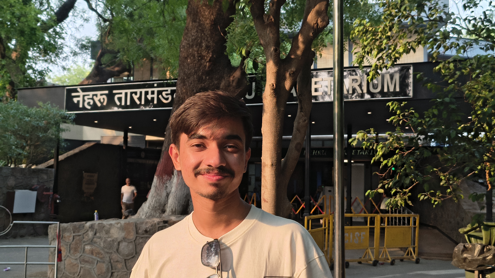
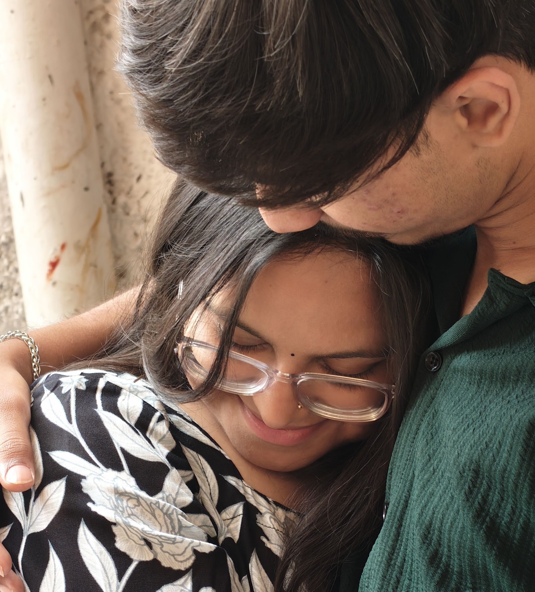
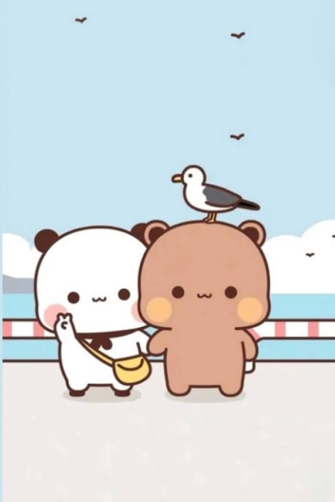

A tiny little surprise
Something for you,
Gudda ♡
Made with a little courage, a lot of love, and a little piece of my heart.

Hi, my Shona.
Before you read anything else…
please know that this comes from my heart.
A few little memories
Our tiny scrapbook ♡

you ♡
me ♡
us, always?There’s a letter for you
Tap the envelope whenever you’re ready.
To my Gudda,
My Shona ♡
I know things got rough between us. Somewhere along the way, the hurt got the better of both of us, and we ended up hurting each other in ways we never wanted to.
But you gave me a chance to prove myself, and that means more to me than I can explain. I'm trying, every day, to become a better person for myself, for you, and for us. I want to be someone you can feel safe with, someone who brings you comfort, and someone you can count on even when things aren't easy.
I miss the little things about us. The random conversations, the silly moments, the way we could turn an ordinary day into something special just by being together.
My world feels a little darker when I can't share my happiness with you. You're my light, my happiness, and my comfort. And even after everything, you're still the person I want to share the beautiful little moments of life with.
I don't expect everything to become perfect overnight. I just want us to take things one step at a time.
With a little more love, a little more understanding, and a little more of each other.
Always,
Gudda ♡

Friday evening?
Would you like to
go on a date with me?
A little walk, a lot of talking, something yummy to eat, and enjoying the lights and stars together.
Yay, my Shona ♡
Then it’s a date. I can’t wait to make a tiny, beautiful memory with you.
It’s okay, Shona.
I really wanted to spend some time with you, so I’ll be a little sad. But I respect your answer, and I don’t want you to feel pressured. Thank you for hearing me out. ♡